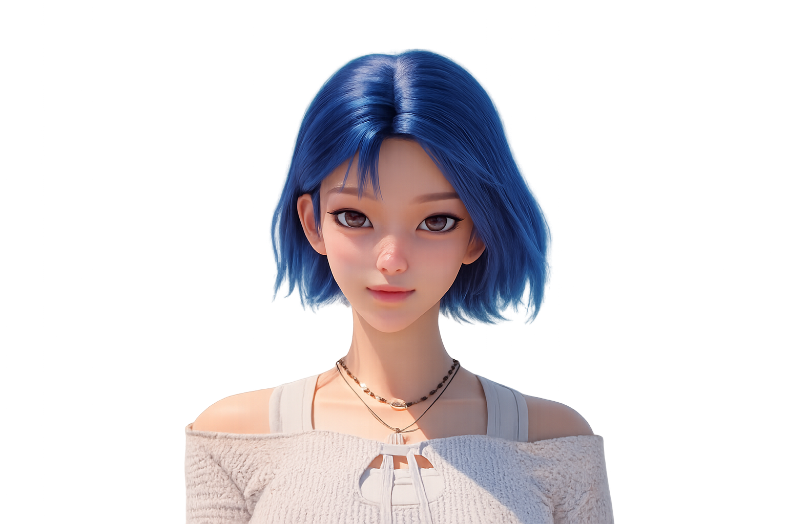
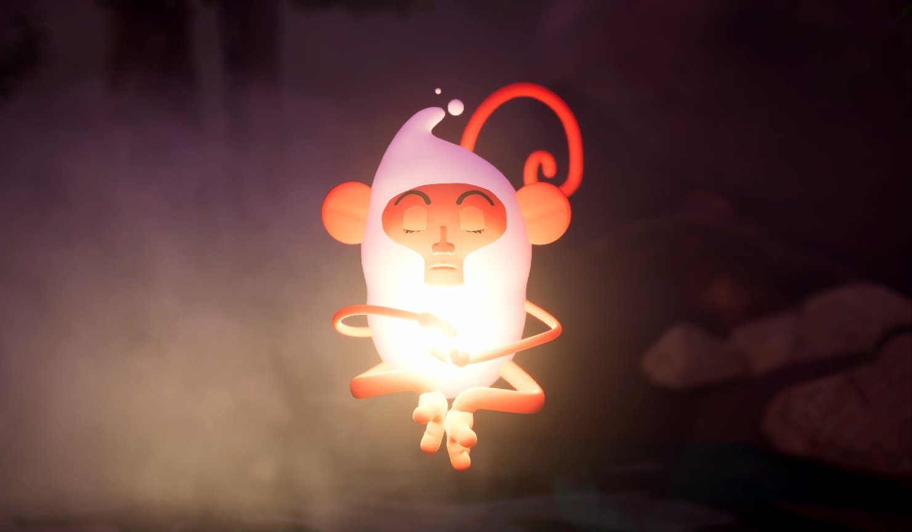
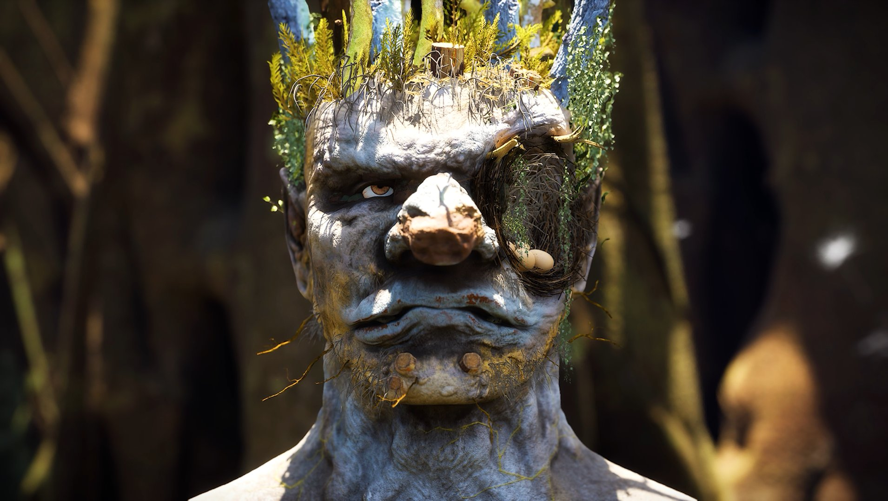
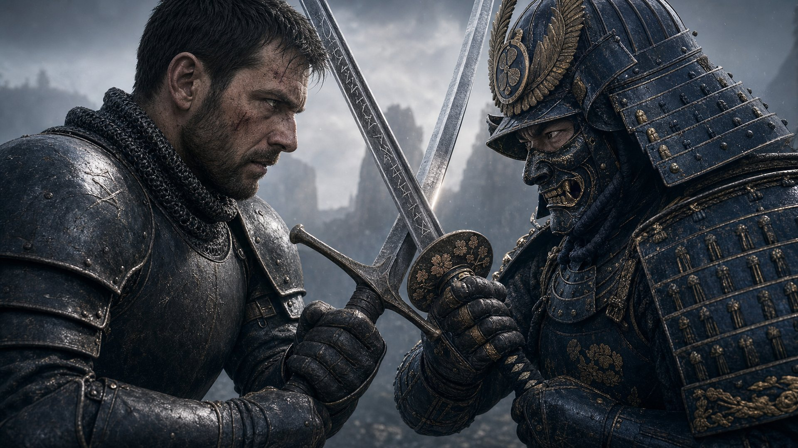
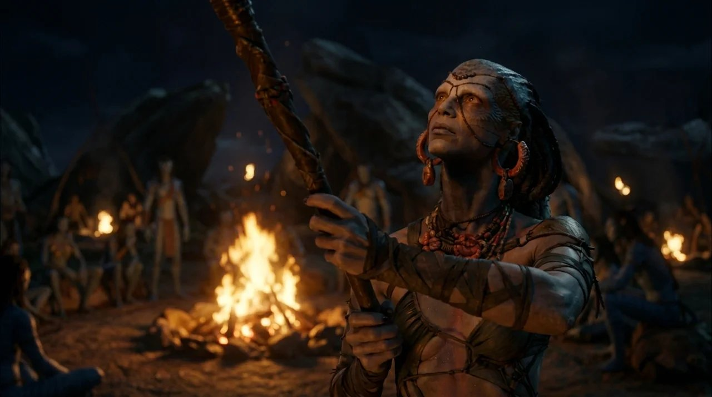
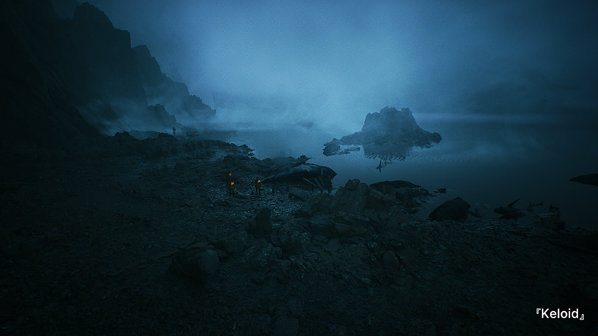

Brand Character Contest / Mongsungi
A character contest entry for Avène, a skincare brand built on thermal spring water. Made everything myself — character design, modeling, rigging-ready round topology, and the Unreal Engine key visual.
 ▶ 8 Videos
▶ 8 Videos
Tool / Automation

nævisPROJECTSM Entertainment · Team Lead
Hard-surface 3D Modeling

MONGSUNGICharacter Design

▶ Turntable ARCIMBOLDOWINTEROrganic 3D Modeling
Organic 3D Modeling

THE WEIGHTOF HONOR ▶ VideoAI Short Film

THE BONFIREWILL DIE ▶ 3 VideosAI Short Film

▶ 2 Videos KELOIDConceptual Cinematic
A character contest entry for Avène, a skincare brand built on thermal spring water. Made everything myself — character design, modeling, rigging-ready round topology, and the Unreal Engine key visual.
Mechanical insects rebuilt from car and light-bulb hard-surface parts, tending a future botanical garden. Took it alone from a color palette and storyboard through modeling, texturing, and rigging, keeping each part’s original silhouette readable.
Led the MNM team through a six-month showcase exhibition built on the IP of nævis, SM Entertainment’s first virtual artist. Handled concept imagery and poster visuals, 3D modeling of Sevas and Codori, and directed and produced the Unreal Engine short-form pieces (Contribution 70%).
A cold, unsettling lab world where the human body has become an energy source. Built the worldbuilding, character sculpt, texturing, and lighting alone, recording the marks of repeated procedures as bruise and wound textures in Substance Painter.
A 3D reinterpretation of Giuseppe Arcimboldo’s painting Winter, imagining the side of the face the original never shows. Sculpted in ZBrush, textured, and animated the expressions with facial capture in Unreal Engine, shifting from winter toward spring as birds arrive.
A graduation cinematic made by building base forms in Unreal Engine, then layering AI-generated detail and deformation on top. Took it end to end alone — worldbuilding and story, hand-drawn concept art, and video production (Contribution 100%).
Built an asset-generation pipeline that takes the art bible section of a game design document and outputs engine-ready assets — concept art, 2D assets, and pixel sprites — with each stage split into its own agent and quality gate, plus a scoring rubric to judge the results. Co-authored A2Z GameSpec-Bench, a KRAFTON AI benchmark that measures how faithfully coding agents turn long-form GDDs into playable games.
Generated 75 frames with GPT Image 2 and animated them through Seedance2, Kling 3.0, and Sora 2 into a 4–5 minute short film, alongside a 2–3 minute short-form series showing the daily life of the Naga without dialogue. Completed both alone, and turned the production process into code.
KRAFTON · KAIST · Korea National University of Arts
KRAFTON AI가 발표한 논문에 공동 저자로 참여했습니다. 코딩 에이전트가 긴 게임 기획서(GDD)를 플레이 가능한 게임으로 얼마나 충실하게 구현하는지 측정하는 벤치마크입니다.
논문 자세히 보기접기
A2Z GameSpec-Bench는 코딩 에이전트가 긴 게임 기획서(GDD)를 플레이 가능한 게임으로 얼마나 충실하게 옮기는지 측정합니다. 100개의 GDD(Small 50 · Big 50)는 각각 고정된 Dependency-Aware Contract로 변환되고, 모든 빌드는 같은 계약에 대해 소스 코드 검사뿐 아니라 시나리오 기반 리플레이와 적응형 플레이테스트를 포함한 Test Policies로 평가됩니다. 평가 결과는 요구사항 단위 피드백이 되어 수정을 이끕니다.
평가 결과, 현재 에이전트들은 코드 구현과 실제 플레이 양쪽에서 서로 얽힌 요구사항을 함께 만족시키는 데 어려움을 겪었습니다. 요구사항별 피드백은 두 라운드 뒤 self-revision 대비 GDD Fidelity를 10.9% (상대 향상) 끌어올렸습니다.
| Small (50 GDDs) | Big (50 GDDs) | |
|---|---|---|
| GDD당 평균 토큰 | 14,085 | 26,297 |
| GDD당 평균 결과 요구사항 | 54.2 | 84.0 |
| 디자인 범위 | 핵심 메카닉 1개, 화면 1개 | 캠페인 · 경제 · 내러티브 등 상호작용하는 시스템 |
각 GDD는 짧은 브리프와 크리에이티브 비전에서 출발해 작성되었고, 구조 적합성 · 내부 일관성 · 동작 타당성 · 수치 정확성을 검사한 뒤 벤치마크에 포함되었습니다. Small 50개는 8개 과제 계열을, Big 50개는 11개 게임 장르를 다룹니다.
| Small task family | n |
|---|---|
| Reaction, Inhibition & Speed Classification | 9 |
| Continuous & Precision Motor Control | 9 |
| Temporal Precision & Rhythm | 7 |
| Planning & Sequential Decision | 7 |
| Deduction & Constraint Solving | 6 |
| Spatial Reasoning & Mental Transformation | 5 |
| Perceptual Estimation & Psychophysics | 4 |
| Short-Term Memory & Attentional Tracking | 3 |
| Big genre | n |
|---|---|
| Simulation & Management | 8 |
| Platformer & Metroidvania | 7 |
| Adventure & Narrative | 6 |
| Strategy & Tactics | 5 |
| Action Roguelite & Survival | 4 |
| Rhythm | 4 |
| Puzzle | 4 |
| RPG | 4 |
| Shooter & Bullet-hell | 3 |
| Sports & Racing | 3 |
| Idle & Clicker | 2 |


평가 대상 코딩 에이전트가 Big · Small GDD로 만든 게임

GDD ──► Dependency-Aware Contract (fixed for evaluation) │ ▼ coding agent implements the GDD in a shared Phaser starter project │ ├── source-code inspection is each rule / invariant implemented? → F_src ├── scenario-based replay does the behavior render on screen? → F_replay └── adaptive playtest does it happen when the game is played? → F_adapt
판정 결과와 근거는 요구사항 단위 피드백이 되어 반복 수정에 쓰이고, 수정된 빌드도 모두 같은 고정 계약에 대해 세 축으로 다시 평가됩니다.
Scope — 메인 벤치마크는 Phaser 기반 2D 싱글플레이 브라우저 게임을 대상으로 하며, 모든 에이전트에 공통 개발 · 실행 환경을 제공합니다. 코드와 데이터셋은 공개 예정입니다.
Delegating complete application development to coding agents requires preserving the intended design rather than simply producing plausible outputs through naïve prompting. Game development provides a demanding testbed, as long-form Game Design Documents (GDDs) describe requirements that must work together across game logic, visual rendering, and player interactions. However, existing game-development benchmarks typically use compact specifications and provide limited support for evaluating interdependent requirements across these aspects in long-form GDDs. We introduce A2Z GameSpec-Bench, a benchmark of 100 long-form GDDs for evaluating end-to-end game development by agents. We measure faithfulness by checking whether the game satisfies the GDD requirements and preserves the relationships among them. Each GDD is turned into a Dependency-Aware Contract that contains rules, constraints, and prerequisite relations. Following game-development practices, we combine source-code inspection with agent-generated Test Policies for scenario-based replay and adaptive playtesting. The contract remains fixed across agents and revision rounds, while judgments and evidence linked to the same requirements support consistent comparison and failure detection. Our evaluations show that current agents struggle to jointly satisfy interdependent requirements across code implementation and actual play. Requirement-specific feedback improves GDD Fidelity by 10.9% relative gain over self-revision after two rounds. A2Z GameSpec-Bench assesses end-to-end specification-following ability beyond implementation judgments and provides targeted feedback to support more faithful game development.
@misc{lee2026a2zgamespecbench,
title = {{A2Z GameSpec-Bench}: How Faithfully Can Coding Agents Generate Games from Game Design Specifications?},
author = {Lee, Seonho and Jeong, Wonryeol and Cereser, Alberto and Kang, Inha and Kim, Hyeonjong and Kwak, Seungmin and Park, Dongmin},
year = {2026},
eprint = {2609.39564},
archivePrefix = {arXiv},
primaryClass = {cs.AI},
url = {https://arxiv.org/abs/2609.39564}
}
Figures and game images © 2026 KRAFTON, Inc. — from the A2Z GameSpec-Bench repository. Code, GDDs, and contracts are released under the MIT License. Scenario-based replay uses the judge interface and model-provider implementations from GameCraft-Bench (Apache License 2.0).
모델 리서치와 2D·3D 파이프라인 설계(2025)를 거쳐, 기획서를 넣으면 엔진에 올릴 에셋이 나오는 생성 서비스와 평가 루브릭(2026)을 만들었습니다.
심해 잠수정 파일럿이 압력 균열의 사슬을 따라 내려가는 탑다운 로그라이크입니다. 층마다 60초의 산소가 주어지고, 그 안에 폭뢰를 배치해 터뜨리면 폭발이 가스 주머니를 가진 생물과 휘발성 분출구를 타고 번져 화면 전체가 빛의 벽이 됩니다.
폭발은 단단한 지형에 가려지고 연쇄는 시야선 안의 물체를 통해서만 이동합니다. 한 번의 폭발로 층 반대편까지 닿게 하려면 생물과 분출구를 디딤돌 삼아 경로를 짜야 하는, 제한 시간 안에 푸는 공간 퍼즐인 셈입니다.
산소는 초당 1씩 줄고 다시 채우는 방법은 균열을 열고 더 내려가는 것뿐이라, 가만히 서 있어도 안전한 순간이 없습니다. 죽으면 그 런에서 모은 광물이 적립돼 잠수정을 영구히 재건하고, 지난번에 죽었던 층이 다음에는 도달 가능한 곳이 됩니다.
2025년에 리서치로 진행했던 작업입니다. 게임 아트에 어떤 모델이 맞는지 찾고, 게임 에셋의 2D·3D 제작 흐름 전체를 설계했습니다.
기획 문서를 넣으면 시트가 나오고, 그 시트에서 2D 스프라이트와 3D 모델이 각각 갈라져 엔진까지 도달하는 흐름을 설계했습니다. 게임 에셋을 종류별로 나눠 각각 별도 계통으로 두고, 단계마다 어떤 모델을 쓸지와 사람이 개입할 지점을 정했습니다.
생성된 시트는 AI가 먼저 걸러 다시 스타일 가이드 쪽으로 되돌리고, 여기서 통과한 것만 업스케일을 거쳐 2D와 3D로 갈라집니다. 포즈·색상 변형과 VFX처럼 같은 시트에서 파생되는 작업도 이 흐름 안에 함께 두었습니다.
당시 이미지 모델은 한 달 단위로 새 버전이 나왔고, 벤치마크 점수가 높다고 게임 아트에 잘 맞는 것도 아니었습니다. 그래서 여러 모델에 같은 프롬프트로 게임 에셋을 돌려보며, 어떤 성향의 모델이 어떤 작업에 맞는지 직접 확인했습니다. 다양한 게임 장르의 아트 스타일로 생성해 비교했습니다.
결론은 단계마다 맞는 모델이 다르다는 것이었습니다. 초기 탐색에는 속도와 레퍼런스 반영도가, 바리에이션에는 일관성과 디테일 유지가 중요합니다. 프롬프트에서 스타일 키워드를 따옴표로 묶어 강조하면 팔레트와 디테일이 눈에 띄게 정확해진다는 것도 이때 확인했습니다.
함께 API 조사도 진행해, 각 단계에 실제로 붙일 수 있는 상용 서비스와 호출 방식을 정리했습니다.
기획서를 넣으면 엔진에 올릴 수 있는 에셋이 나옵니다.
게임 기획서(GDD)의 아트 바이블 섹션을 입력으로 받아, 컨셉 아트에서 2D 에셋을 거쳐 픽셀 스프라이트까지 만들어내는 에셋 생성 파이프라인입니다. 컨셉·2D·픽셀 단계를 각각 독립된 에이전트로 분리하고, 단계마다 자체 품질 게이트를 두어 기준에 못 미치면 다음 단계로 넘기지 않도록 구성했습니다.
아트 바이블의 에셋 스펙을 단일 기준으로 삼는 것이 핵심입니다. 캔버스 크기와 에셋 종류, 프레임 수, fps, 팔레트, 네이밍까지 기획서에 명시된 값만 사용하고 파일명이나 설명에서 추론하지 않습니다. 값이 비어 있으면 작업을 멈추고 기획서를 채우도록 되돌립니다. 픽셀 변환에는 생성 모델을 쓰지 않고 색과 형태를 분리해 팔레트를 밝기 순으로 직접 할당하며, 타일셋은 이어 붙였을 때 이음매가 보이지 않는지 따로 검증합니다.
단계마다 독립된 생성 에이전트를 두고, 각 에이전트가 자기 몫의 파이썬 도구를 호출하는 구조입니다. 컨셉 아트와 2D 에셋, 픽셀 변환이 각각 다른 이유로 실패하기 때문에, 한 덩어리로 두지 않고 실패 유형별로 갈랐습니다.
도구는 이미지·영상 생성부터 후처리·검증까지 단계별로 나뉘어 있습니다. 배경 제거와 가장자리 정리, 팔레트 감사, 프레임 선별, 모션 차이 검증, 타일 연결성 검사처럼 손으로 확인하던 일을 스크립트로 옮겨 매 실행마다 같은 기준으로 걸러냅니다.
"결과물이 쓸 만한가"를 사람마다 다르게 판단하면 무엇을 고치고 무엇을 넘길지 정할 수 없습니다. 그래서 채점 루브릭을 직접 설계하고 실제 산출물에 돌려가며 다듬었습니다.
결과물의 완성도, 기획서와 규격을 지켰는지, 세트로 묶었을 때 흩어지지 않는지처럼 서로 다른 이유로 무너지는 것들을 각각 다른 축으로 나눠 채점합니다. 설계에서 내린 판단은 네 가지입니다.
검증이 겨냥하는 것은 눈으로 보면 통과해 버리는 결과물입니다. 명백히 깨진 것은 검사할 필요가 없습니다. 누군가 금방 알아채기 때문입니다. 프레임 수는 맞는데 프레임끼리 차이가 없는 애니메이션, 한 장만 보면 멀쩡한데 이어 붙이면 이음매가 드러나는 타일처럼 리뷰어가 승인할 법한 것이라야 기계적인 검사를 둘 이유가 생깁니다.
기준을 만들고 나서도 실제 산출물에 계속 돌려가며 고쳤습니다. 처음 세운 항목이 현장에서 안 맞는 경우가 있었고, 그때마다 항목을 바꾸기보다 왜 안 맞았는지를 먼저 남겼습니다. 무엇이 문제였는지 기록해두지 않으면 다음 버전에서 같은 판단을 반복하게 됩니다.
결국 이 기준이 답하려는 것은 세 가지입니다. 무엇부터 고칠 것인가 — 총점이 아니라 무너진 축이 답합니다. 방금 바꾼 것이 나아졌는가 — 같은 버전 안에서만 비교합니다. 이 숫자를 믿어도 되는가 — 애초에 잴 수 있는 상태였는지를 게이트가 먼저 판정합니다.
월드모델에 쓸 시뮬레이션 도시 배경을 언리얼 엔진 5로 제작했습니다. 이를 위해 언리얼 PCG를 따로 공부하며 도시 생성기와 환경 연출을 함께 실험했습니다.
월드모델에 쓸 시뮬레이션 도시 배경을 언리얼 엔진 5로 제작했습니다. 건물 외벽 셰이더를 HLSL로 포팅해 창문·실내 시차·블라인드를 재현하고, 가로수 37,390그루와 소품 58종 약 27만 개를 HISM 인스턴스로 배치했습니다.
도시는 크래프톤 inZOI 에셋들로 만들었습니다.


이를 위한 PCG 학습
Procedural Minds의 도시 생성기 튜토리얼을 따라 학습하며 PCG 그래프로 구성한 생성기입니다. 스플라인으로 그린 도로에서 교차로를 찾아 배치하고, 도로 양옆을 따라 건물과 진입로를 세웁니다. 도로를 고치면 교차로와 건물 배치가 함께 다시 생성됩니다. 건물은 크래프톤 inZOI 에셋을 사용했습니다.


에픽게임즈 「시작해요 언리얼 2026」 2주 차(PCG와 PLA로 완성하는 레벨 디자인)를 따라, 도화원과 골렘 사원 배경을 PCG와 패킹된 레벨 액터(PLA)로 구성했습니다. 완성한 배경 위에서 장면을 시퀀서로 연출하고 1080p로 렌더했습니다.
Paragon 기디언 애니메이션에 맞춰 Niagara로 스킬 이펙트를 만들고, 시퀀서로 타이밍과 카메라를 연출했습니다.

KRAFTON AI · 공동 저자 — 코딩 에이전트가 게임 기획서(GDD)를 얼마나 충실하게 구현하는지 측정하는 벤치마크